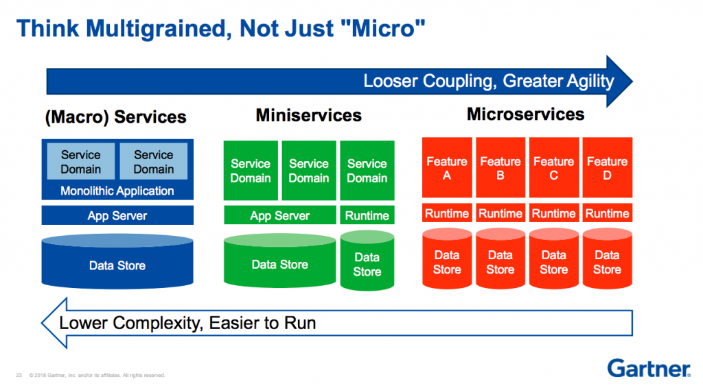

# APIDays Quick scoping
## Summary - Paradigms - Potential issues - Is architecture a thing ? - Solutions - ...
## Summary - ... and space cats <br/>
## Paradigms
## Multigrained services  *Be pragmatic*
## EDA - HCLC - asynchronous - Pub-Sub - DDD, Event-Sourcing... This lead to new infra. needs, and team communication issues...
## Potential issues
## Collaboration issues <ul> <li class="fragment fade-in">Understanding others' development ?</li> <li class="fragment fade-in">The "not my responsibility" problem !</li> <li class="fragment fade-in">Consuming external resources...</li> </ul>
## Too many micro-services ?
??? <br/> <img class="stretch" data-src="img/scared-cat.jpg">
## Development & Integration - Underfetching - Overfetching - Optimization ...
Don't forget security !
## Is architecture a thing ?
## API Gateway & Service Mesh *Les gateways sont de mesh*
## Different kind of gateways ?
## Solutions that help
## Tools <ul> <li class="fragment fade-in"> GraphQL <ol> <li class="fragment fade-in">Resolve overfetching</li> <li class="fragment fade-in">Describe your API</li> </ol> </li> <li class="fragment fade-in"> Vulcain <ol> <li class="fragment fade-in">Resolve overfetching & underfetching</li> <li class="fragment fade-in">Granular HTTP Cache</li> <li class="fragment fade-in">HTTP & REST</li> </ol> </li> </ul>
## Vulcain
## Standards & Documentation <ul> <li class="fragment fade-in">OpenAPI</li> <li class="fragment fade-in">AsyncAPI</li> </ul>
## Processes <ul> <li class="fragment fade-in">API design reviews</li> </ul>
## Conclusion